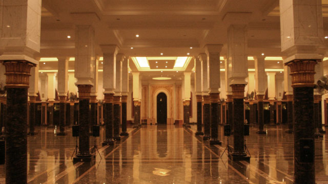
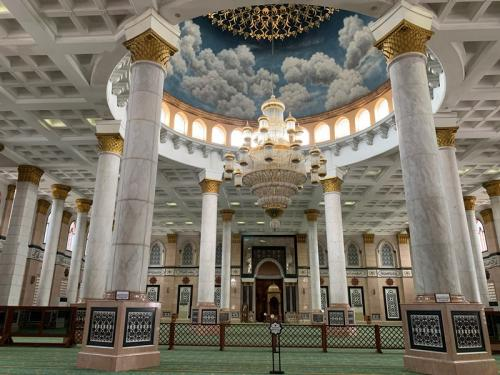
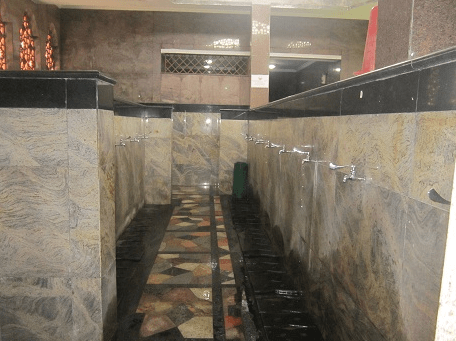
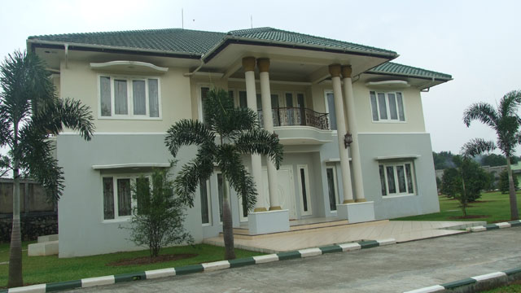
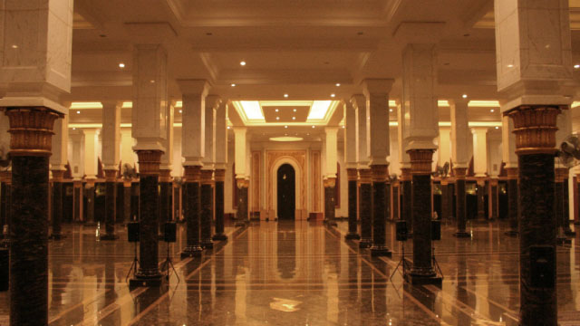
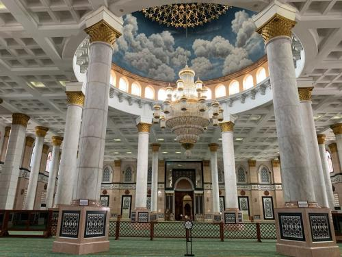
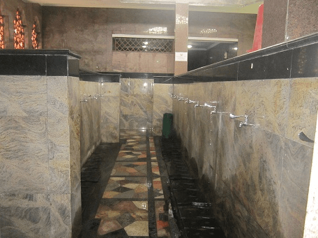
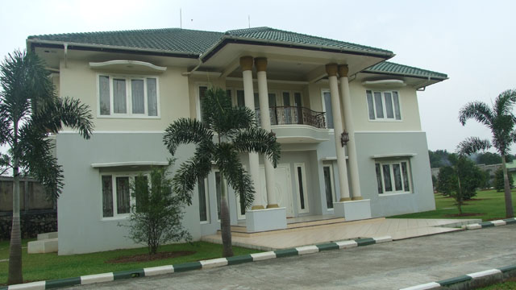

Profile Masjid Kubah Emas, Limo Depok
Gallery Foto
 







Deskripsi Fasilitas
Kemegahan Masjid Kubah Emas Dian Al Mahri mampu mengalahkan kepopuleran masjid-masjid yang sudah ada sebelumnya. Banyaknya pengunjung masjid tidak hanya tertarik pada bangunan masjid yang megah saja, tetapi pengunjung semakin suka dan betah karena banyaknya fasilitas Masjid Kubah Emas Dian Al Mahri yang ditawarkan. Fasilitas-fasilitas masjid diantaranya.
1. Tempat Parkir Luas dan Aman
Fasilitas Masjid Kubah Emas Dian Al Mahri pertama adalah lahan tempat parkir yang sangat luas. Tempat parkir mampu menampung kendaraan roda empat dengan jumlah 300 kendaraan, sedangkan daya tampung untuk kendaraan roda dua sejumlah 1.400 motor. Bagi pengunjung yang membawa kendaraan sendiri tidak perlu kuatir akan keamanan kendaraannya karena ada banyak satpam yang bertugas di masjid tersebut, salah satu tugasnya mengamankan kendaraan pengunjung.
2. Taman
Taman Masjid Kubah Emas Dian Al Mahri di buat sangat bagus untuk menciptakan lingkungan masjid yang asri. Taman masjid akan memberikan kesejukan dan keindahan sehingga jamaah yang sedang melaksanakan ibadah akan lebih kusyuk. Taman masjid yang berbentuk kluster-kluster menciptakan pemandangan yang berbeda-beda tiap sudutnya sehingga konsep taman modern ini akan sangat bagus menjadi spot dalam pengambilan gambar.
3. Tempat Penitipan Sendal dan Sepatu
Masjid Kubah Emas Dian Al Mahri memiliki fasilitas penitipan sandal dan sepatu supaya jamaah yang beribadah didalam masjid tenang dan nyaman sehingga ibadah bisa kusyuk. Tempat penitipan sepatu disediakan banyak loker yang dijaga dan dikasih nomer supaya sepatu dan sandal yang dititipkan tidak tertukar dengan milik jamaah lainnya.
4. Gedung Serbaguna
Gedung Serba Guna yang memiliki luas 60 x 70 meter berada berdampingan dengan bangunan Masjid Kubah Emas Dian Al Mahri. Gedung Serba Guna ini sering dijadikan tempat resepsi pernikahan, pengajian akbar, dan kegiatan besar lainnya. Kapasitas Gedung Serba Guna mulai dari 400 orang hingga 2000 orang. Peraturan pemakaian Gedung Serba Guna cukup sederhana, yaitu semua alat bunyi harus berhenti 5 menit sebelum adzan sampai selesai salat jamaah. Adapun fasilitas Gedung Serba Guna antara lain ruang rias, toilet VIP, listrik non AC, keamanan dan kebersihan.
5. Villa 2 dan Villa 3
Villa ini bisa digunakan untuk bermalam dan kegiatan khusus seperti resepsi pernikahan atau syukuran keluarga. Villa 2 terdiri dari 6 kamar utama, 4 kamar mandi, ruang keluarga, ruang tamu, musala, pantry, balkon, dan halaman villa. Sedangkan Villa 3 memiliki 8 kamar utama, 1 kamar biasa, 10 kamar mandi, ruang keluarga, ruang tamu, musala, pantry, balkon, dan halaman villa.
Alamat dan Peta Lokasi
Masjid Kubah Emas Dian Al-Mahri, Jl. Meruyung Raya, Meruyung, Kec. Limo, kota, Jawa Barat 16515.
Testimoni & Komentar
Pengurus Masjid

Lokasi/tempatnya sangat baguss untuk tempat rekreasi islami bagi keluarga dan juga tempat spot foto dengan pemandangan kubah emas yg menarik bagi pengunjung...(eksplore depok,indonesia).
Pejabat 1
Butuh kesabaran dan perjuangan utk sampai ke tempat ini, karena macetnya itu lho klo siang, tp kenapa masjid ini jd tempat rekreasi, dan ini masjid bukan tempat wisata, saya harap utk kedepanya biaya parkir bisa di kurangi, karena ini masalah tempat ibadah bukan masalah tempat wisata, karena semakin banyaknya jamaah yg menunaikan ibadah disini, insya allah rejeki untuk para pekerja disana bertambah, dan semoga masjid ini jd kebanggan warga cinere - depok
Warga 1
Luas kawasan masjidnya luas banget, suasanya juga adem. Untuk masjidnya sendiri juga luas. Terjaga juga kebersihannya. Terdapat aula juga di samping masjid yg juga tak kalah luasnya, serta biasa digunakan oleh wisatawan untuk transit. Kalau jalan kaki menyusuri semua kawasan masjid rasanya tak cukup sehari saking luasnya kawasan masjidnya. Dan yg paling penting kebersihan selalu dijaga walau banyak wisatawan yg sembarangan buang sampah.